| Menu
Funções |
|
Conversão
de Sistemas
Essa função
permite a realização de conversões entre
sistemas de referência usuais e entre conjuntos de velocidades
angulares.
Clique no menu “Funções ►
Conversão de sistemas”. Será apresentada a janela abaixo:
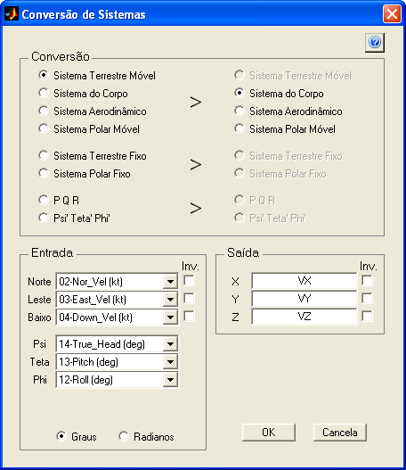
● No campo
“Conversão” indique os sistemas de entrada
e de saída desejados. Os sistemas estão disposos
em
grupos e apenas as conversões possíveis serão habilitadas. As opções
são:
|
Entrada |
Saída |
|
Sistema
Terrestre Móvel |
Sistema
Terrestre Móvel |
|
Sistema do Corpo |
Sistema do Corpo |
|
Sistema
Aerodinâmico |
Sistema
Aerodinâmico |
|
Sistema Polar Móvel |
Sistema Polar Móvel |
Ou:
|
Entrada |
Saída |
|
Sistema
Terrestre Fixo |
Sistema Terrestre Fixo |
|
Sistema Polar Fixo |
Sistema Polar Fixo |
Ou:
|
Entrada |
Saída |
|
P Q R |
P Q R |
|
Psi’ Teta’ Phi’ |
Psi’ Teta’ Phi’ |
● No campo
“Entrada” indique os parâmetros de entrada
solicitados. Na parte superior indique as três coordenadas a serem
convertidas
e na parte inferior os ângulos relativos necessários à conversão.
As figuras a
seguir ilustram as conversões possíveis dentro
de cada grupo e as variáveis envolvidas:
Grupo 1:
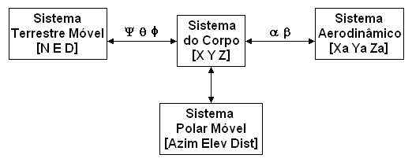
Grupo 2:
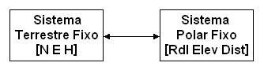
Grupo 3:
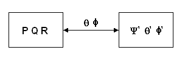
● Caso algum
dos eixos do sistema de entrada esteja invertido
com relação ao sentido usual, marque a opção “Inv.” correspondente. O
parâmetro
será multiplicado por –1.
● Indique, na
parte inferior da lista de parâmetros de
entrada, a unidade em que os parâmetros de entrada angulares se
encontram
(α, β, ψ, θ, Φ, Azim, Elev, Rdl).
As opções são “Graus” e “Radianos”. Os parâmetros de velocidades
angulares (P,
Q, R, ψ’, θ’, Φ’) são assumidos em graus por segundo e
parâmetros ângulares de
saída (Azim, Elev, Rdl)
● No campo “Saída” indique os
nomes dos parâmetros de entrada solicitados. Os nomes não podem ser
vazios nem
superiores a 48 caracteres.
● Caso algum
dos eixos do sistema de saída esteja invertido
com relação ao sentido usual, marque a opção “Inv.” correspondente. O
parâmetro
será multiplicado por –1.
Após definir
todos os parâmetros e pressionar “OK”, os novos
parâmetros serão calculados e acrescentados às matrizes de trabalho,
antes do
parâmetro “No.OBS.”.
Para cancelar a operação, clique no botão "Cancela" e confirme.
Descrição
dos Sistemas
Os sistemas de
referência reconhecidos pelo R_DAT são:
Sistema
Terrestre
Móvel
Sistema
ortogonal dextrógiro
que
acompanha a aeronave e cujos eixos são orientados geograficamente.
Os eixos desse
sistema são:
- N: Aponta para
o
Norte verdadeiro;
- E: Aponta para
o
Leste verdadeiro;
- D: Aponta para
o
centro da Terra, segundo a direção da gravidade (“down”).
A origem do
sistema é móvel e acompanha o CG da aeronave.
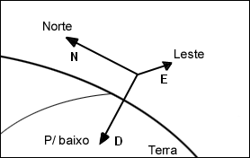
Sistema do Corpo
Sistema
ortogonal dextrógiro
que
acompanha a aeronave e cujos eixos são fixos ao corpo da mesma.
Os eixos desse
sistema são:
- X: Aponta para
frente da aeronave, segundo a linha de referência de fuselagem;
- Y: Aponta para
a
direita da aeronave, no plano horizontal da mesma;
- Z: Aponta para
baixo da aeronave, no plano de simetria da mesma.
A origem do
sistema é móvel e acompanha o CG da aeronave.
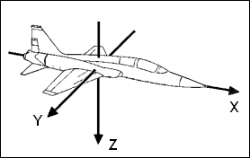
As relações
entre os
sistemas terrestre móvel e do corpo definem os ângulos de Euler:
- Proa
verdadeira
(ψ): ângulo entre o eixo norte verdadeiro (N) e a projeção do eixo X da
aeronave no plano horizontal do sistema terrestre (NE) (medido no
sentido
horário);
- Ângulo de
arfagem
ou de atitude longitudinal (θ): ângulo entre o plano horizontal do
sistema
terrestre (NE) e o eixo X da aeronave (positivo a cabrar);
- Ângulo de
rolamento ou de atitude lateral (Φ): ângulo entre o plano horizontal do
sistema terrestre (NE) e o eixo Y da aeronave, medido no plano YZ da
aeronave
(positivo para rolamento à direita).
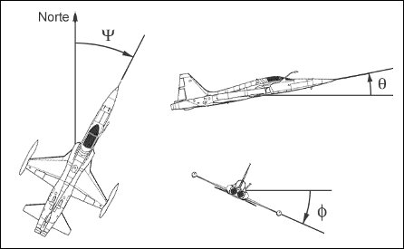
Sistema
Aerodinâmico
Sistema
ortogonal dextrógiro
que
usa a velocidade de translação da aeronave na massa de ar como
referência
(vento relativo).
Os eixos desse
sistema são:
- Xa: Aponta no sentido da
velocidade aerodinâmica da
aeronave;
- Ya: Aponta 90° à direita do eixo
Xa;
- Za: Perpendicular ao plano XaYa,
apontando para o ventre da aeronave (para
α pequenos).
A origem do
sistema é móvel e acompanha o CG da aeronave.
As relações
entre os sistemas do corpo e aerodinâmico
definem os ângulos de ataque e derrapagem da aeronave:
- Ângulo de
ataque
(α): ângulo formado entre a projeção do vetor velocidade no plano XZ e
o
eixo X da aeronave (positivo com vento relativo vindo de baixo);
- Ângulo de
derrapagem (β): ângulo formado entre o vetor velocidade e o plano XZ da
aeronave (positivo com vento relativo vindo da direita).
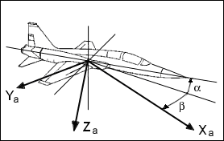
Sistema Polar
Sistema
composto de duas medidas angulares e uma medida de
distância. O sistema pode ser dividido em dois tipos:
Sistema Polar Fixo:
Sistema polar
fixo à superfície da Terra, típico de um radar
de solo. As componentes desse sistema são:
- Radial:
Ângulo
entre o eixo norte verdadeiro e a projeção do vetor no plano horizontal
local
(medido no sentido horário);
- Elevação:
Ângulo
entre o plano horizontal local e o vetor (positivo para cima);
- Distância:
Magnitude do vetor.
A origem do
sistema é fixa na superfície da Terra.
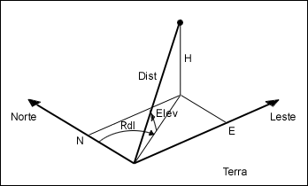
Sistema Polar
Móvel:
Sistema polar
atrelado a um corpo móvel, típico de um sensor
embarcado (como o radar). As componentes desse sistema são:
- Azimute:
Ângulo
entre o eixo X da aeronave e a projeção do vetor no plano XY da
aeronave
(positivo para direita);
- Elevação:
Ângulo
entre o plano XY da aeronave e o vetor (positivo a cabrar);
- Distância:
Magnitude do vetor.
A origem do
sistema é móvel e acompanha o CG da aeronave.
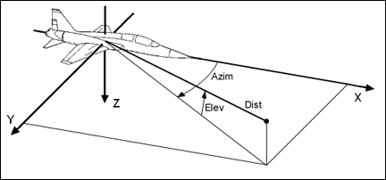
Sistema
Terrestre Fixo
Sistema
ortogonal levógiro, fixo à superfície
da Terra (típico de um radar de solo), e cujos
eixos são orientados geograficamente.
Os eixos desse
sistema são:
- N: Aponta
para o
Norte verdadeiro;
- E: Aponta
para o
Leste verdadeiro;
- H: Aponta para
cima, perpendicular ao plano horizontal local.
A origem do
sistema é fixa na superfície da Terra.
Os dois
conjuntos de velocidades angulares reconhecidos pelo
R_DAT são:
P Q R
Conjunto
formado pelas velocidades angulares em torno dos
eixos X, Y e Z do sistema do corpo.
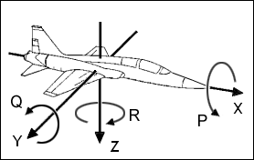
ψ’ θ’ Φ’
Conjunto
formado pelas velocidades angulares resultantes das
variações de proa, atitude longitudinal e atitude lateral.
Lógica de
Operação
As conversões
são realizadas usando-se as equações e
matrizes de transformação de sistemas apresentadas a seguir:
Terrestre Móvel para
Corpo:
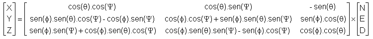
Corpo para
Terrestre Móvel:
Como a matriz é
ortogonal, sua inversa é igual a sua
transposta, logo a conversão é semelhante à anterior, porém com a
matriz
transposta.
Corpo para
Aerodinâmico:
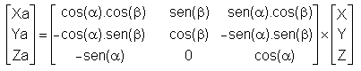
Aerodinâmico
para
Corpo:
Como a matriz é
ortogonal, sua inversa é igual a sua
transposta, logo a conversão é semelhante à anterior, porém com a
matriz
transposta.
Corpo para
Polar Móvel:
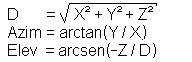
Polar Móvel para
Corpo:
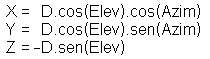
Polar para
Terrestre
Fixo:
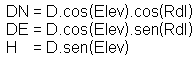
Terrestre Fixo
para
Polar:
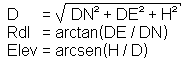
PQR para ψ’
θ’ Φ’:
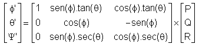
ψ’ θ’ Φ’ para PQR:
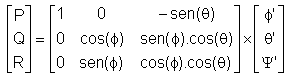
| |
Conversão
de coordenadas |
Integração
de
trajetória |
|